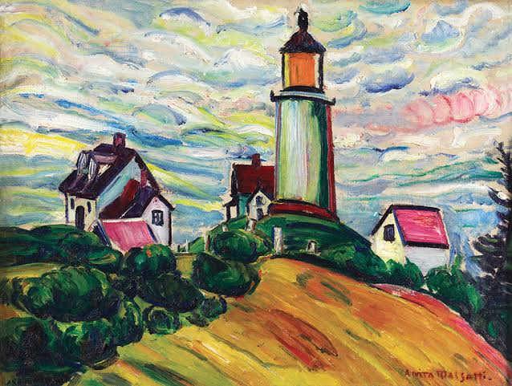

Anita Malfatti • 1915 • óleo sobre a tela • 46,3 x 61 cm
Sobre a obra
A obra representa uma paisagem da ilha de Monhegan, com um farol e pequenas casas situadas sobre uma
elevação. A composição também apresenta vegetação, morros e um céu cheio de cores e movimentos.
O que mais chama a atenção é o contraste entre a paisagem e a maneira como ela foi pintada. Em vez de
reproduzir cada elemento com precisão fotográfica, Anita utiliza pinceladas visíveis, formas estilizadas e
cores intensas, criando uma representação própria do lugar.
O céu tem grande destaque visual, enquanto o farol e as casas ajudam a organizar a composição. A paisagem
parece ter movimento, como se o vento e as mudanças do clima também fizessem parte da cena.
Características artísticas
Cores vibrantes
A artista utiliza diferentes tonalidades de azul, verde, amarelo e outras cores para criar contrastes e dar
personalidade à paisagem. As cores não servem apenas para imitar a natureza: elas também contribuem para a
expressividade da pintura.
inceladas marcantes
As pinceladas são visíveis e dinâmicas, deixando a superfície da tela com textura. Esse recurso torna a
pintura mais expressiva e transmite uma sensação de movimento.
Formas estilizadas
As casas, os morros e a vegetação não são representados com o rigor de uma fotografia. As formas são
simplificadas e adaptadas à linguagem pessoal da artista.
Esses elementos aproximam a obra do Expressionismo e mostram a influência das tendências modernas que Anita
conheceu durante sua formação.
Movimento artístico
A obra é associada principalmente ao Modernismo e ao Expressionismo.
O Expressionismo valorizava a expressão pessoal do artista, utilizando cores, formas e pinceladas para criar
uma representação intensa da realidade. Em O Farol, essa característica aparece na força das cores e no
movimento da pintura.
A obra também apresenta afinidades com a valorização de cores intensas encontrada em tendências como o
Fauvismo. Essas aproximações ajudam a compreender o ambiente artístico moderno com o qual Anita teve contato
nos Estados Unidos.
É importante lembrar que os movimentos artísticos não são categorias rígidas: uma obra pode reunir
características de diferentes tendências.
Significado de O Farol
O significado da pintura pode ser explorado a partir de dois aspectos: aquilo que ela representa visualmente
e as interpretações que podemos construir ao observá-la.
O farol é tradicionalmente associado à orientação, à segurança e à esperança, pois sua luz ajuda a orientar
embarcações. Por isso, ele pode ser interpretado simbolicamente como um ponto de referência em meio às
mudanças da natureza. Essa é uma possibilidade de leitura, e não necessariamente uma intenção declarada pela
artista.
A paisagem também permite refletir sobre a relação entre o ser humano e a natureza. As casas e o farol
aparecem integrados aos morros e ao céu, enquanto as pinceladas expressivas fazem o ambiente parecer vivo.
Além disso, as cores podem provocar diferentes sensações em quem observa a obra. Algumas pessoas podem
perceber tranquilidade na paisagem; outras podem notar agitação e intensidade no céu. Essa variedade de
interpretações faz parte da experiência artística.
Semana da arte moderna
A obra O Farol, de Anita Malfatti, está relacionada ao contexto de renovação artística que marcou a Semana
de Arte Moderna de 1922. Pintada por volta de 1915, ela demonstra a experimentação estética que ajudou a
preparar o caminho para o Modernismo brasileiro.
A Semana de Arte Moderna aconteceu no Teatro Municipal de São Paulo, entre 13 e 17 de fevereiro de 1922, e
reuniu artistas, escritores, músicos e intelectuais interessados em romper com os padrões tradicionais da
arte. Anita Malfatti foi uma das figuras importantes desse movimento, graças à sua busca por novas formas de
expressão.
Em O Farol, essa renovação pode ser percebida nas cores intensas, nas pinceladas marcantes e na
representação menos realista da paisagem. Em vez de apenas reproduzir fielmente a natureza, a artista
explorou formas e cores para criar uma composição expressiva, característica das tendências modernas que
conheceu durante seus estudos no exterior.
É importante destacar que a relação da obra com a Semana de 1922 é principalmente histórica e artística: não
devemos afirmar que O Farol foi exposto durante o evento sem uma fonte documental que confirme isso. A
participação de Anita na Semana e a importância de sua produção para o Modernismo são fatos distintos da
presença de uma pintura específica na exposição.